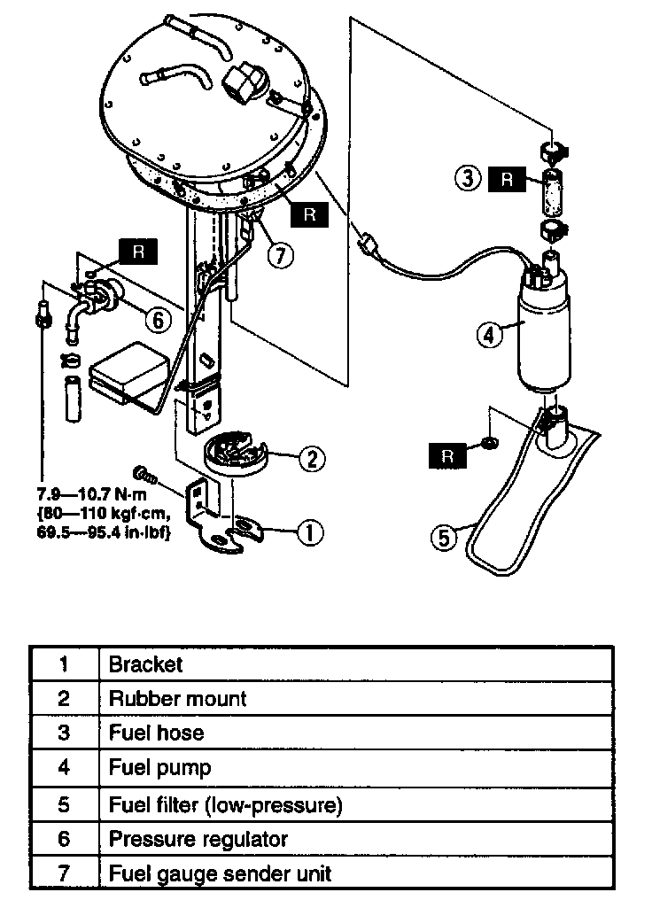
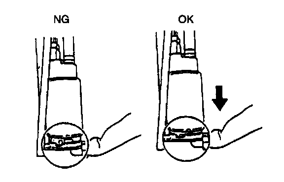
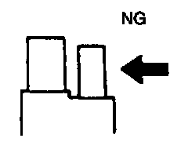

Assembly and Disassembly

1. Disassemble in the order indicated in the table.
2. Assemble in the reverse order of disassembly.

Fuel Pump Assembly NOTE:
- After installing the fuel pump to the bracket, pull the pump down so that it is tight against the bracket and there is no gap.
Fuel Hose Assembly Note

1. Do not apply excessive side force when pushing the fuel hose onto the fuel pump nipple.

2. Install the clamps as shown.